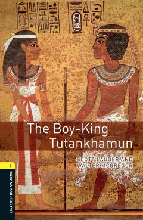

TBQadimgi Misr fir'avni Tutankhamun hayoti va uning sirli qabri haqidagi qiziqarli tarixiy hikoya.
Ushbu kitob qadimgi Misr fir'avni Tutankhamunning hayoti va uning qabri topilishi haqidagi tarixiy voqealarni sodda ingliz tilida hikoya qiladi. Oxford Bookworms seriyasining birinchi bosqichiga mansub bo'lib, ingliz tilini o'rganuvchilar uchun maxsus moslashtirilgan.